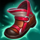
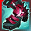

起手組件
- 禁忌之像
開局直接提高治療、護盾與技能循環，最符合索娜第一波團戰需求。
校正至 7.3d · 2026-10-28。Tier與配置是本站的模式策略判斷，不是官方勝率排名。
起手組件 → 一階鞋或首件核心（依壓力調整）→ 核心成裝 → 鞋子升級 → 情境後續裝。五件成裝加一雙鞋；鞋子兩張圖表示升級前後，不是同時購買兩雙。
開局直接提高治療、護盾與技能循環，最符合索娜第一波團戰需求。
索娜會高頻率施法，額外魔力與後續護盾能解決 ARAM 長時間不回城的續航問題；7.2a 雖放慢堆疊，仍是最穩的魔力核心。
索娜：把治療或護盾效果延伸給低血量隊友；7.3後不再以舊版移動蓄能來解釋觸發。
索娜的護盾與治療能讓多名普攻核心吃到攻速增益，團隊收益很高。
若隊伍有法師或技能型核心，群體護盾能快速把增益覆蓋全隊。
後期主力被硬控時可直接解控，讓索娜不必冒險往前救人。

技能加速直接轉成更多治療、加速與大絕。

索娜：愛歐尼亞之靴升級，為反覆施法與支援帶來循環收益；不是所有英雄的固定首選。

索娜本身沒有位移，閃現主要用來保命或調整大絕角度。
敵方刺客切入時直接降低爆發，保住自己與主力輸出。
索娜能以治療/護盾或消耗反覆運用艾莉；7.3b護盾基礎值降低，保留是因觸發頻率與技能協同，不是忽略削弱。

命中敵人後為自己與附近低血隊友提供回復，適合團隊型英雄。

被刺客或強開碰到時減少第一輪爆發。
直接放大治療與護盾效果。
更多技能加速等於更多 2、3 技與大絕。
2 技 > 1 技 > 3 技
ARAM 開局三個基礎技能各點 1 級，之後主升 2 技、次升 1 技；大絕能點就點。7.2b 回調治療後，更要靠技能頻率維持團隊血線。
站在後排與隊友保持光環距離，2 技不要等到隊友殘血才放；利用 1 技安全消耗並準備力量和弦。
大天使與和諧回音成形後開始高頻循環技能。團戰前先保魔力，力量和弦若要反打優先用 2 技衍生的減傷，追擊則用 3 技衍生的減速。
後期敵方會更想先抓索娜。保持在主力旁邊，不要為了一次 1 技往前走；大絕優先反開多名突進者或接隊友群控。
隊伍很需要開戰／撤退加速
可替換米凱，進一步放大整隊移速節奏。
需要額外遠距救援
可作功能替代，但 Howling Abyss 對同一目標後續贖罪治療有 60% 衰減，不列為固定核心。

隊伍已很安全且需要更高治療／傷害
後期可犧牲一件功能裝換取更高 AP。
標準 ARAM 最後可追溯倍率：7.2b 調整的是英雄技能本身：2 技治療 45/60/75/90→35/50/65/80，大絕冷卻 80/70/60→80/75/70；近期官方未列標準 ARAM 專屬百分比修正。 本輪核對至7.3d，未以符文大亂鬥倍率覆蓋；官方未提供本英雄完整新版倍率總表，若遊戲內不同以當局模式增益為準。
索娜的強項是短冷卻技能不斷循環治療、護盾與加速；復原與流水回音是絕對核心，護盾、技能、控場與跑速類都能直接放大團隊功能。
實戰使用方式：看遊戲增幅卡片下方的官方分類 → 點相同分類 → 優先看 S+／S／A；再依本局增幅方向選擇對應出裝路線。
核心
二技能同時提供治療與護盾，高頻施放能反覆觸發復原類增幅。
核心
流水系列幾乎完全圍繞治療護盾設計，和索娜的光環循環高度契合。
高適配
二技能可以穩定上盾，護盾免控與護盾觸發效果都有實戰價值。
高適配
索娜靠短冷卻技能不停循環，任何技能加速與命中收益都容易累積。
適配
大絕群控與力量和弦減速能利用控制類增幅，但不是每次施法都能觸發。
適配
三技能光環本身就提供跑速，相關增幅能讓全隊拉扯更加順暢。
復原／流水增幅多
大天使穩定魔力後，以和諧回音、熾灼魔器與流水之杖放大每輪技能循環。 本路線已同步7.3c的一般裝備；增幅專屬替換另依抽卡決定。
索娜會高頻率施法，額外魔力與後續護盾能解決 ARAM 長時間不回城的續航問題；7.2a 雖放慢堆疊，仍是最穩的魔力核心。
索娜：把治療或護盾效果延伸給低血量隊友；7.3後不再以舊版移動蓄能來解釋觸發。
索娜的護盾與治療能讓多名普攻核心吃到攻速增益，團隊收益很高。
若隊伍有法師或技能型核心，群體護盾能快速把增益覆蓋全隊。
後期主力被硬控時可直接解控，讓索娜不必冒險往前救人。
技能加速直接轉成更多治療、加速與大絕。
索娜：愛歐尼亞之靴升級，為反覆施法與支援帶來循環收益；不是所有英雄的固定首選。
需要更強進退場
加入蘇瑞亞的戰歌，讓三技能與治療護盾一起帶動全隊拉扯。
索娜會高頻率施法，額外魔力與後續護盾能解決 ARAM 長時間不回城的續航問題；7.2a 雖放慢堆疊，仍是最穩的魔力核心。
索娜：把治療或護盾效果延伸給低血量隊友；7.3後不再以舊版移動蓄能來解釋觸發。
若隊伍有法師或技能型核心，群體護盾能快速把增益覆蓋全隊。
隊伍很需要開戰／撤退加速
可替換米凱，進一步放大整隊移速節奏。
後期主力被硬控時可直接解控，讓索娜不必冒險往前救人。
技能加速直接轉成更多治療、加速與大絕。
索娜：愛歐尼亞之靴升級，為反覆施法與支援帶來循環收益；不是所有英雄的固定首選。
分類與單卡評級是本站條件式建議。新卡完整效果未核實時不補造數值；當局抽到的卡片會改變優先順序。
7.3d／2026-10-28：本輪核對公告共通差異、現行裝備與符文引用，保留 v123 的既有攻略。標準 ARAM 倍率沿可追溯歷史基準，未套用符文大亂鬥專屬倍率；Tier 為本站建議，非新版勝率或全技能實測。